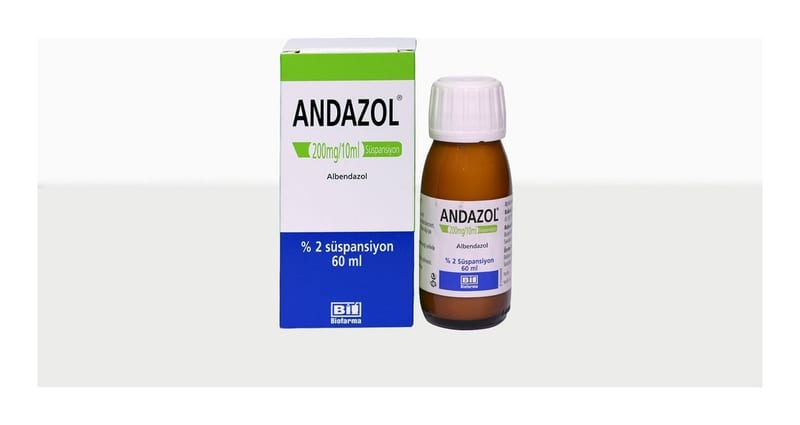

Andazol 200 mg/10 ml Süspansiyon, 60 ml

Ne için kullanılır
KT · Bölüm 1ANDAZOL®süspansiyon her bir ölçekte 200 mg albendazol içeren 20 ve 60 ml’lik PE plastik kapaklı kahverengi şişelerde 10 ml’lik plastik kaşık ölçek ile sunulmaktadır. ANDAZOL®antihelmintik bir ilaçtır. Yumurtadan yeni çıkmış böcek larvalarının vücutta gelişmesini veya çoğalmasını önler. ANDAZOL®domuz tenyası ve köpek tenyası gibi bağırsak kurtlarının neden olduğu belirli enfeksiyonların tedavisinde kullanılır. Bu ilacı kullanmaya başlamadan önce bu KULLANMA TALİMATINI dikkatlice okuyunuz, çünkü sizin için önemli bilgiler içermektedir.
Bu kullanma talimatını saklayınız. Daha sonra tekrar okumaya ihtiyaç duyabilirsiniz. Eğer ilave sorularınız olursa, lütfen doktorunuza veya eczacınıza danışınız. Bu ilaç kişisel olarak sizin için reçete edilmiştir, başkalarına vermeyiniz. Bu ilacın kullanımı sırasında, doktora veya hastaneye gittiğinizde doktorunuza bu ilacı kullandığınızı söyleyiniz. Bu talimatta yazılanlara aynen uyunuz. İlaç hakkında size önerilen dozun dışında yüksek veya düşük doz kullanmayınız.